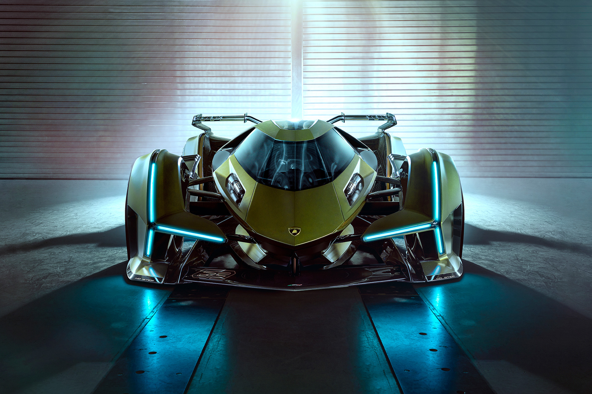
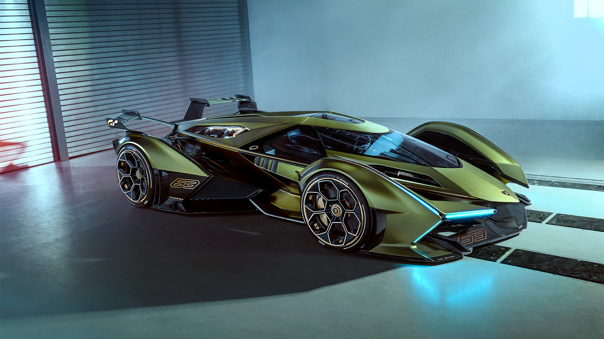

A Lamborghini design DNS és futurisztikus jegyei az ikonikus egyetlen középvonalra és az összetéveszthetetlen sziluettre összpontosítanak, miközben hangsúlyozzák az együléses elrendezést, amely virtuális formájában a Lamborghini Sián FKP 37 hajtásláncát használja.
A Lamborghini Centro Stile tovább fejezte ki elkötelezettségét a kifinomult aerodinamika iránt, miközben integrálja a teljesítményfelületeket és az észbontó dizájnt: egy nagy szárny, amely a hátul egy jelentős Y-hátsó lámpát foglal magában, a főtestet leválasztják a sárvédőkről, az oldalablakok hatszög ihlette motívumot ihlettek. az 1968-as Lamborghini Marzal, és a tipikus Lamborghini Y-jelzés az első és a hátsó lámpákhoz egyaránt.
Korát megelőző belső kialakítás: a sofőr úgy lép be az utastérbe, mint egy jetfighter pilóta, az autó elejéről. A vezetés fő kezelőszervei a futurisztikus kormánykeréken helyezkednek el, és a vezető összes információja gyakorlatilag a vezető elé kerül.
Stefano Domenicali, az Automobili Lamborghini elnök-vezérigazgatója így nyilatkozott: „A Lamborghini egy nagyon fiatal márka, és ezért vagyunk ma itt, hogy bemutatjuk legújabb virtuális víziónkat egy valódi modell formájában, rendkívül futurisztikus és menő dizájnnal. a versenyjátékok fiatal generációja és a szupersportautó-rajongók élvezik.”
„A Lambo V12 Vision Gran Turismo a tökéletes virtuális autó a fiatal rajongók és játékosok számára, akik rendkívül lelkesednek a Lamborghiniért és annak futurisztikus törekvéseiért” – mondta Mitja Borkert, a Lamborghini Centro Stile vezetője. "Ez egy lehetőség a Lamborghini tervezői tehetsége számára, hogy kinyújtsa szárnyait, és olyan autót jelenítsen meg, amely, mint minden Lamborghini, nem csak egy fejforgató és a legjobb vezetési élmény, hanem tükrözi a Lamborghini jövő technológiái iránti törekvéseit is, különösen a könnyű anyagok és hibridizáció.”
 